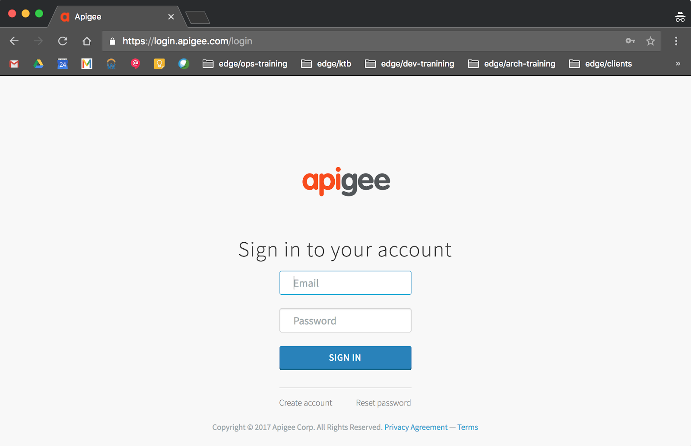
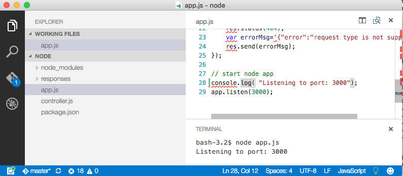
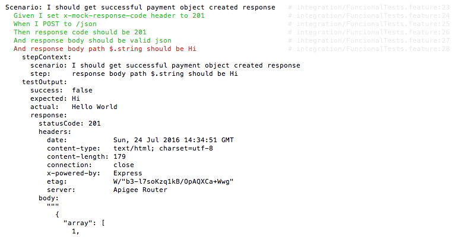

It takes time and some learning curve to set up a development environment for a person that begins her Apigee Edge journey. The purpose of this lab is to ease the pain for both, Mac, Windows, and Linux users, especially with respect of enterprise environments where some additional attention to http(s) proxy configurations is required.
We also add a new BDD test and will run test requests using different http clients.
Even that the steps are slightly skewed towards Mac users, the course and toolkit successfully run on each platform.
There is a number of setting with regards to the firewall configurations, which are captured in the document, albeit in a terse form and always are slightly difference on a client site, depending on their security restrictions/proxy settings.
Most tools are OS-specific installers and take care about platform differences automatically. (git, nodejs, vscode).
For Windows/NTLM environment, most of the command-line tools would need to use HTTP_PROXY, HTTPS_PROXY environment variables and sometimes there might be a complication with NTLM configuration that we would need to consult your networking admins, but let's not get too pessimistic prior to trying it as sometimes it can just work.
Usually, you can get to the Internet using Chrome or Internet Explorer, but not via CLI/Command Terminal. Easiest way to try it is to download curl for Windows and get it working.
If yes, this points to a problem with NTLM-based proxy. In most of the cases, set up of http_proxy and https_proxy variables is sufficient. For a fraction of installations, NTLM-based proxy is required for user credentials to work. In those cases, you need to download and setup http://cntlm.sourceforge.net/ utility.
It is a simple NTLM-based proxy connector. It does for you an NTLM authentication but lets your command-line based utilities use simple proxy settings.
1. Go to http://enterprise.apigee.com/
If you are not logged in, you will be redirected to https://login.apigee.com/login URL.

2. Click Create account link below SIGN IN button on the left. Fill the form Create your account:
Full Name: <your-first-name-last-name>
Username: <your-user-name (these labs use dbcjd)>
Email: <your-edge-email>
Password: <your-edge-password>
Company: <any>
Confirm: <your-edge-password>
Agree to the Terms of Service
Click SIGN UP
3. Respond on captcha challenge, select all relevant squares.
4. Check your email inbox for an activation link.
5. Activate account by clicking on email Activate your account link.
6. Sign in to your account using <your-edge-email>/<your-edge-password> credentials.
Select and install Postman application according to your OS:
https://www.getpostman.com/downloads/
https://chrome.google.com/webstore/detail/jsonview/chklaanhfefbnpoihckbnefhakgolnmc
1. Install from https://git-scm.com/download/mac for Mac or https://git-scm.com/download/win for Windows
2. Check the version
# git --version git version 1.8.3.1
1. Navigate to https://maven.apache.org/download.cgi
2. Download apache-maven-3.5.0-bin.zip to
3. Extract its contents to %USERPROFILE%/bin
It will create the folder <Drive>:\Users\<your-user-id>\bin\apache-maven-3.5.0 in your profile home.
4. Open cmd terminal.
5. Execute
set M2_HOME=%USERPROFILE%\bin\apache-maven-3.5.0 set M2=%M2_HOME%\bin set PATH=%M2%;%PATH%
6. Check maven functionality
mvn --version
1. Download tarball apache-maven-3.5.0-bin.tar.gz from https://maven.apache.org/download.cgi
2. Untar into ~/bin
3. Update the PATH environment variable
For Mac:
export M2_HOME=~/bin/apache-maven-3.3.9 export M2=$M2_HOME/bin export PATH=$M2:$PATH
4. Validate Maven functionality and version
# mvn --version Apache Maven 3.3.9...
1. Go to a Maven home folder for user configuration
For MacOS/Linux:
cd ~/.m2
For Windows:
cd %USERPROFILE%/.m2
2. Create or edit setting.xml file and dbc identity profile
<settings>
<profiles>
<profile>
<id>dbcjd</id>
<properties>
<username>{your-edge-email}</username>
<password>{your-edge-password}</password>
</properties>
</profile>
</profiles>
</settings>Download and install your OS-specific version from https://nodejs.org/en/download/
Download curl for windows from this page https://curl.haxx.se/download.html
Find a link for your Windows 64 or 32 bit platform. I.e.,
https://dl.uxnr.de/build/curl/curl_winssl_msys2_mingw64_stc/curl-7.53.1/curl-7.53.1.zip
There are ways on Windows to do x509-related operations. For example using http://www.entrust.net/knowledge-base/technote.cfm?tn=8924. However, it will not help you if/when need to do those operations on your Linux boxes. For a smooth inter-platform experience, it is simpler and easier to use openssl utility, which has native Windows port.
For the PKI certificate-related Labs, we need a swiss-knife of TLS/SSL utilities, the openssl.
You can select a pre-built binary distribution from https://wiki.openssl.org/index.php/Binaries, ie., https://indy.fulgan.com/SSL/openssl-1.0.2l-i386-win32.zip.
Then unzip and put an .exe and .dll files in a folder of your choice on the PATH.
Run openssl version to validation functionality and a version of the utility.
1. Install from https://code.visualstudio.com/docs/setup
2. Install XML Tools plugin, https://marketplace.visualstudio.com/items?itemName=DotJoshJohnson.xml
install extensionsxml toolsOpen Chrome and go to the URL below to see the proxy details
Turn off proxying for localhost:
command line:
export no_proxy="127.0.0.1,localhost,$(hostname -i)"jvm:
-Dhttp.nonProxyHosts=curl | cli: curl -x http://127.0.0.1:8080 <url> ~/.curlrc proxy = <proxy_host>:<proxy_port> Windows: %APPDATA%\_curlrc * Use double-quotes in Windows for curl parameters. In curl CLI: curl --proxy <proxy server:port> If _curlrc setting does not work, you always can use: set http_proxy=http://<proxy_host>:<proxy_port> set https_proxy=http://<proxy_host>:<proxy_port> If you can reach IP address of the Edge but not the DNS name, use curl -k https://52.89.253.102/v1/organizations/<yourorg> -H "Host: api.enterprise.apigee.com" -v -u <yourorgadminmail>:<yourorgadminpassword> * -k to ignore TLS certificate checks | |
git | git config http.proxy http://host:port | |
vscode | Preferences/User Settings { "http.proxy": "http://my.proxy.address:8080", "https.proxy": "http://my.proxy.address:8080", "http.proxyStrictSSL": false } | |
jvm/maven plugin | Linux: export MAVEN_OPTS="-Dhttp.proxyHost=127.0.0.1 -Dhttp.proxyPort=8080 -Dhttps.proxyHost=127.0.0.1 -Dhttps.proxyPort=8080" Windows: set MAVEN_OPTS=-Dhttp.proxyHost=127.0.0.1 -Dhttp.proxyPort=8080 -Dhttps.proxyHost=127.0.0.1 -Dhttps.proxyPort=8080 | |
npm | npm config set proxy http://proxy.company.com:8080 npm config set https-proxy http://proxy.company.com:8080 | |
maven | {M2_HOME}/conf/settings.xml <proxies> <proxy> <id>optional</id> <active>true</active> <protocol>http</protocol> <username>mkyong</username> <password>password</password> <host>proxy.mkyong.com</host> <port>8888</port> <nonProxyHosts>local.net|some.host.com</nonProxyHosts> </proxy> </proxies> | |
request/node.js | // In the code when defining r instance: var r = request.defaults({'proxy':'http://localproxy.com'}) | |
cucumber/node.js | Windows: set http.proxy=http://my.proxy.address:8080 set https.proxy=http://my.proxy.address:8080 | |
The amok project contains three components
localhost:3000;Reference Links:
1. mkdir ~/dbc and cd to directory ~/dbc
mkdir ~/dbc cd ~/dbc
2. Fetch the source
git clone https://github.com/api-bucket/amok.git
4. Navigate to the mock project.
cd ~/dbc/amok/examples/apigee-amok/node
6. Start VSCode
code .
7. Let's make a change. Add below line 27 add line:
console.log( "Listening to port: 3000");
8. In VSCode menu select View/Toggle Integrated Terminal
9. In the terminal window, build the Node.js application using npm command
npm install
10. Run the project.
node app.js

7. Test the project. In Chrome browser navigate to http://localhost:3000/json
Observe a json diagram, nicely presented by JSONView Chrome extension.
1. Back in the terminal window, go to apickli project
cd ~/dbc/amok/examples/apigee-amok/tests
2. Open VSCode in apickli project
code .
3. In VSCode menu, select View/Toggle Integrated Terminal
2. Fetch node packages
npm install
3. Create symbolic link on latest version of the apickli-gherkin.js file.
cd integration/step-definitions ln -fs ../../node_modules/apickli/apickli-gherkin.js apickli-gherkin.js
4. Edit the url of the proxy endpoint. Open integration/step-definitions/mock.js file. Edit line 7 to:
var url = 'dbcjd-test.apigee.net/amok-api';and line 9 to:
var env = process.env.NODE_ENV || 'test';5. Save the file, Cmd+S
1. In the terminal window, go to Apigee nodejs proxy directory
cd ~/dbc/amok/examples/apigee-amok/
Notice the pom.xml file here.
2. Deploy the project into your org and test environment as well as run the BDD tests against it. You are supping three key bits of information during mvn invocation:
dbcjd profile -- a profile that contains credentials for your Edge org;test profile -- defines an Edge org environment you are deploying proxy to;apigee.org=dbcjd -- JVM environment variable that overrides default org name defined in test profile.mvn install -Pdbcjd,test -Dapigee.org=dbcjd
For Windows user, the out-of-the-box .pom file will not execute cucumber tests correctly.
The .pom file expects cucumber.js to be executed according to the Unix conventions, ie., using shebang (#!).
To be able to run cucumber on Windows you need to account for this discrepancy.
In the .pom file locate the following section:
<configuration>
<environmentVariables>
<NODE_ENV>
${apigee.env}
</NODE_ENV>
</environmentVariables>
<executable>tests/node_modules/cucumber/bin/cucumber.js</executable>
<commandlineArgs>
tests/integration
</commandlineArgs>
</configuration>
</execution>
and adjust executable and commandlineArgs tags to:
<executable>node</executable>
<commandlineArgs>
tests/node_modules/cucumber/bin/cucumber.js tests/integration
</commandlineArgs>
Similarly, for the next page, to run cucumber.js from CLI instead of
./node_modules/cucumber/bin/cucumber.js integration/FuncionalTests.feature use
node ./node_modules/cucumber/bin/cucumber.js integration/FuncionalTests.feature1. In your browser, open https://enterprise.apigee.com and log in.
2. Select APIs/API Proxies menu item
3. Select amok project, deployed couple minutes ago.
4. Switch to TRACE tab
5. Start tracing session by clicking on Start Trace Session button.
6. Re-run BDD tests in the terminal window
cd ~/dbc/amok/examples/apigee-amok/
mvn exec:exec@integration -Pdbcjd,test -Dapigee.org=dbcjd
Keep an eye on the Transactions pane of the Edge Tracing page.
1. Go to the apickli project level, where package.json is located.
cd ~dbc/amok/examples/apigee-amok/tests3. Runt the BDD Apickli/cucumber tests
./node_modules/cucumber/bin/cucumber.js integration/FuncionalTests.feature Keep an eye on the Transactions pane of the Edge Tracing page. 4 more request traces will appear.
1. Add following scenario to the integration/FuncionalTests.feature file:
Scenario: I should get successful payment object created response
Given I set x-mock-response-code header to 201
When I POST to /json
Then response code should be 201
And response body should be valid json
And response body path $.string should be Hi2. Re-run the test. Analyse the failed test. The response body path $.string has an actual value Hello World, but expected Hi.

3. Edit the Hi to the Hello World string.
4. Re-run the tests. Whole feature is successfully executed this time.
1. Open Postman
2. In the Enter request URI text box, enter the URL of the mocked service
http://dbcjd-test.apigee.net/amok-api/json
3. Change verb of the request from default GET to POST
4. Change the Content-Type of the Body to application/json. Always explicitly specify the type of the body of the POST request.
1. Still in the Postman active window, click on the orange Generate Code link.
2. Select cURL value in the combo-box of the GENERATE CODE SNIPPETS modal dialog.
3 Click on Copy to Clipboard button
4. Switch to the terminal window.
5. Paste the code and press enter
curl http://dbcjd-test.apigee.net/amok-api/json -X POSTKeep an eye on the Transactions pane of the Edge Tracing page. More request traces will appear as you execute the queries.